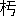

| 探検実記 地中の秘密 29 お穴様の探検 | |
| 江見 水蔭 | |
| (2012) | |
探檢實記 地中の秘密
お穴樣の探檢
江見水蔭
――大評判の怪窟――探檢の勢揃――失敗の第一日――二日目――迷信家の大氣㷔――大發見？――探檢の本舞臺――最初の入窟者――怪窟の構造――其結果――
大評判
の怪窟
※［＃感嘆符三つ、262-10］
それは、東京
と横濱
との中間
で、川崎
からも鶴見
からも一里
足
らずの處
である。神奈川縣橘樹郡旭村大字駒岡村
瓢簟山
の東面部
に其怪窟
はある。
發見
したのは、明治
四十年
四月
の四日
で、それは埋立工事
に用
ゐる爲
に、山
の土
を土方
が掘取
らうとして、偶然
に其怪窟
を掘當
てたのであるが、窟
の中
から人骨
や武器
や玉類
や土器等
が出
たので以
て、圖
らず迷信家
の信仰心
を喚起
し、或
は又
山師輩
の乘
ずる處
となつて、忽
ちの間
に評判
大評判
『お穴樣
』と呼
び『岩窟神社
』と唱
へ、參詣人
引
きも切
らず。日
に何
千人
、時
としては何萬人
と數
へられ、お賽錢
だけでも日
に何
百圓
といふ揚
り高
で、それに連
れて今
までは寂
しかつた田舍道
［＃ルビの「ゐなかみち」は底本では「ゐなかみつ」］
に、軒
を並
べる茶店
やら賣店
やら、これも新築
三百餘軒
に達
したとは、實
に驚
くべき迷信
の魔力
※［＃感嘆符三つ、263-9］
面喰
つたのは神奈川縣
の警察部
で、斯
くの如
き迷信
を、成
すが儘
に増長
［＃ルビの「ぞうちやう」は底本では「ぢうちやう」］
さしては、保安上
容易
ならぬ問題
であるといふので（それに濫
りに神社呼
はりを爲
る事
は法律
の許
さぬ處
でもあるので）奉納
の旗幟
、繪馬等
を撤
せしめ、窟
から流出
する汚水
［＃ルビの「をすい」は底本では「をす」］
を酌取
るを禁
じ、警官
を出張
さして嚴
に取締
を付
けたのであるが、それでも參詣人
は一向
减
じ無
い。晝夜
の差別
なく、遠近
から參集
する愚男愚女
は、一里
の道
を引
きも切
らず。
其所
で、其
岩窟
なる物
が、抑
も何
んであるかを調
べる必用
を生
じ、坪井理學博士
の第
一の探檢調査
となつた。それは九月
十二日
であつた。
實
は博士
をわざ〳〵勞
するまでも無
かつたので、これは古代
の葬坑
で、横穴
と通稱
するもの。能
く調
べたら全國
到
る處
に有
るかも知
れぬ。現在
に於
ては、九州
、四國
から、陸前
、陸奧
、出羽
の方
まで掛
けて三十五ヶ國
に亘
り發見
されて居
るので、加之
横穴
は一ヶ所
に群在
する例
が多
いのだから、穴
の數
を算
したら、どの位
有
るか知
れぬのである。中
で最
も名高
いのは、埼玉縣
の吉見村
の百穴
（實數
二百四十餘
）である。
それから、今度
發見
された駒岡附近
にも、既
に已
に澤山
横穴
［＃ルビの「よこあな」は底本では「よつあな」］
が開發
されてあるのだが、扨
て、果報
なのは今回
のお穴樣
で、意外
の人氣
を一個
で背負
つて、眞
に希代
の好運兒
、否
、好運穴
といふべきである。
横穴
は何處
までも横穴
であるが、内部
の構造
に多少
注意
すべき點
もあり。それから瓢簟山
の頂上
に於
て、埴輪土偶
を二個
發見
した關係
から、四ヶ處
の隆起
せる山頂
を以
て、古墳
では無
いかといふ疑問
を生
じ、若
し其
隆起
せる山頂
が、瓢簟形
か或
は前方後圓
の古墳
であるとすれば、其
山頂
の古墳
と山麓
の横穴
と、如何
なる關係
を有
するであらうか。山頂
のが主墳
で、山麓
のが殉死者
を葬
つたのでは有
るまいかといふ、斯
うした疑問
をも生
ぜられるのである。
多
くの例
に於
ては古墳
（高塚
）と横穴
とは、別種
に考
へられて居
る。よしや同所
に有
らうとも、同時代
とは考
へられて居
らぬ。高塚
よりも横穴
の方
が、時代
に於
て若
いと考
へられ居
るので、高塚
は高塚
で或時代
に築
かれ、横穴
は横穴
で其後
に造
られると、斯
う大概
考
へられて居
たのであるが、それを坪井博士
は、同時代
に解釋
を下
されたのである、少
しく考古趣味
を有
する者
は、變
だなと思
はざるを得
ないのであるが、それには又
それだけの理由
が有
る。
それは瓢簟山
の地形
である。此地形
が主墳
の周圍
に陪塚
を造
るをゆるさぬ。即
ち主人
を葬
つた塚
の近
くに、殉死者
の塚
を造
るだけの餘地
が無
いので、已
むを得
ず山麓
に横穴
を造
つたといふの説
である。果
して然
らば學術上
の大發見
である［＃「大發見
である」は底本では「犬發見
である」］
。
それで、兎
も角
も、山頂
の凸起
する地點
に調査
を試
み、果
して古墳
であるか否
かを確
める必用
［＃ルビの「ひつよう」は底本では「ひつえう」］
を生
じたので、地主側
の請願
もあり、博士
はいよいよ十月
七日
より數日間
此所
に大發掘
を擧行
せらるゝ事
となつた。
此豫報
が一たび各新聞
に由
つて傳
へられると、迷信
非迷信
に關
らず、江湖
は大
いなる注意
を之
に向
けて拂
つた。
何
が出
るだらう？
改
めて余
は茲
に言
ふ。或
る意味
に於
ての大怪窟
が、學術
の光
に如何
照
らされるであらうか。深
き興味
を以
て此大發掘
を迎
へざるを得
ない。
其所
で余
は、一方
に於
ては、新聞記者
の職務
を以
て、一方
に於
ては、太古遺跡研究會幹事
の本分
を以
て、坪井博士監督
の下
に行
はれる所謂
お穴樣大發掘
の參觀
［＃ルビの「さんくわん」は底本では「さんくわい」］
に出張
する事
とはなつた。
東京朝日新聞
の記者
にして考古家中
に嶄然
頭角
を露
はせる水谷幻花氏
と同行
して、余
は四十一年
十月
七日
午前
九時
（曇
）鶴見
の電車停留場
に到着
すると、間
もなく都新聞
の吉見氏
、中央新聞
の郡司氏
が來
た。
其所
へ坪井博士
は、石田理學士
、大野助手
、野中事務員
を同行
して、電車
で來
られた。續
いて帝室博物館員
、高橋
、平子
、和田
、紀
の諸氏
が來
る。新聞記者
としては、國民
の松崎
、平福
、郡司
の三氏
、時事
の左氏
、東京毎日
の井上氏
、毎日電報
の近藤氏
、やまとの倉光氏
、日本
の中村氏
、萬朝
の曾我部
山岡
二氏
、報知
の山村氏
、城南
の高橋氏
、其他
讀賣
、二六、東京日日等
、悉
く揃
つた。
これに出迎
への村長
、地主
、有志家等
、大變
な人數
である。それが瓢形
に駒岡
と記入
したる銀鍍金
の徽章
を一樣
に着
け、同
じ表
の小旗
を立
てた俥
に乘揃
つて、瓢簟山
へと進軍
？したのは、なか〳〵のお祭
り騷
ぎ※［＃感嘆符三つ、267-11］
一先
づ一同
は、地主
の一人
たる秋山廣吉氏
の宅
に着
き、其所
から徒歩
で、瓢簟山
へ行
つて見
ると、山
の周圍
に鐵條網
を張
り、警官
十餘名
、嚴重
に警戒
して、徽章
なき者
は出入
を禁
じてある。
山麓
には、紅白
だんだらの幕
を張
り、天幕
を吊
り、高等官休憩所
、新聞記者席
、參觀人席
など區別
してある。別
に喫茶所
を設
けてある。宛然
園遊會場
だ。
其所
へ、周布神奈川縣知事
が來
る。橋本警務長
が來
る。田中代議士
、樋口郡長
、曰
く何
、曰
く何
、斯
ういふ時
には肩書
が必用
［＃ルビの「ひつよう」は底本では「ひつえう」］
と見
える。高等野次馬
の數
、無慮
百餘名
と註
せられた。
其所
で、第
一の探檢
が所謂
お穴樣
の内部
である。前
には此横穴
の前
まで、參詣人
を寄
せたのであるが、それでは線香
で燻
べたり、賽錢
を投付
けたりするので、横穴
の原形
の毀損
する虞
れが有
る爲
に、博士
は取調上
の必用
から、先日
警察
に交渉
し、入口
から三間許
り隔
て、棒杭
を打
ち、鐵條
を張
り、人
を入
らしめぬ樣
に警戒
を依頼
されたのだ。
今日
は併
し、其博士
が先導
であるから、我々
は自由
に内部
まで入
るを得
た。但
し、五六人宛
交代
［＃ルビの「かはりがは」は底本では「はかりがは」］
りである。
穴
は間口
七尺
五寸
に、奧行
八尺
の、高
さ四尺
、長方形
の岩室
で、それに柄
を附
けた樣
に入口
の道
がある。突當
りに一段
高
い處
があつて、それから周圍
と中央
とに淺
い溝
が掘
つてある。之
は水
の流出
を謀
つたのであらう。
右
の如
く純然
たる古代
の葬坑
で、住居跡
なんどいふのは愚説
の甚
しいのである。横穴
の中
でも格別
珍
らしい構造
では無
いが、床
と溝
とが稍
形式
に於
て異
なつて居
る位
で、之
を信仰
するに至
つては、抱腹絶倒
せざるを得
ない。
扨
て坪井博士
は、石田學士
大野助手等
と共
に、豫
て集合
さしてある赤鉢卷
の人夫
三十餘名
を督
して、いよ〳〵山頂
の大發掘
に取掛
り、又
一分隊
を派
して、瓢簞山西面
に、半
埋
もれたる横穴
、三箇
の發掘
を開始
されたが、間
の惡
い時
には何處
までも惡
いもので、東面
の地主
と西面
の地主
とは、感情
の衝突
か何
［＃ルビの「なに」は底本では「なか」］
か有
つて、西面
の方
へ無斷
で手
を附
けるとは怪
しからんとか何
とか、少
しの手違
ひに突入
つて喰
つて掛
り、山上
で大激論
が始
まり、警務長
や郡長
や代議士
などが仲
に入
つて、兎
も角
も歪
なりの圓滿
？に局
を結
び、一時
中止
して居
た發掘
を續
ける事
となつたが、西面北部
の横穴
は、乞食
が曾
て住
んで居
た事
があり、西面南部
の二箇
には、子供
が入
つて遊
んだ事
もある。然
うして二箇
は内部
で連絡
して居
るといふ事
が分
つたので、何
んだか張合
は拔
けて來
る。小雨
は降
り出
す。新聞記者連
はそろ〳〵惡口
を始
める。地主連
はまご〳〵して居
る。惰氣滿々
たる此時
に、南部
の横穴
の方
で、坪井博士
は、一聲
高
く。
『出
た※出
［＃感嘆符三つ、270-6］
た※［＃感嘆符三つ、270-6］
』
忽
ち全山
の高等野次馬
は、我
おくれじと馳付
けて見
ると、博士
は笑
ひながら、古靴
の片足
を、洋杖
の先
に懸
けて示
された。塵
と一處
に穴
の中
へ落
ちて居
たのを、博士
が戯
れに取出
されたので、之
は一抔
［＃ルビの「ぱい」は底本では「ぱく」］
頂戴
したと、一同
クツ〳〵笑
ひ。
這
んな事
で一向
に要領
を得
ず、山頂
の方
では、僅
かに埴輪
の破片
（雲珠
、鞆等
）を見出
したのみ、それで大發掘
の第
一回
を終
つた。
余
は折角
着込
んで行
つた探檢服
に、少
しも泥
を附
けずして宅
へと引揚
げた。大學連中
は皆
泊
り込
みである。
八日
（曇後晴
）余
は午前
十時頃
に瓢簞山
へ到着
して見
ると、發掘
は既
に進行
して赤鉢卷隊
は活動
して居
るが、一向
に變
つた事
は無
い。
それでも、西面南部
の二箇
の横穴
は、大概
發掘
を終
り、其岩壁
が欠壞
して、奧
で貫通
して居
る事
が判明
し、又
石灰分
が岩面
の龜裂
の部分
から漏出
して、小鐘乳石
を垂下
して居
るのを發見
した。
一時
は天井
から骨
がぶら下
つて居
るの、セメントで内部
が塗
［＃ルビの「ぬ」は底本では「ね」］
つて有
るのと、高等野次馬
の騷
ぎと云
つたら無
かつた。
それから一方
の小
なる横穴
のシキからは、人
の大腿骨
［＃ルビの「だいたいこつ」は底本では「だいたいこく」］
と指骨
の一小部分
とが出
で［＃「出
で」は底本では「出
て」］
、直刀
の折片
、鍔
（鐵製
、寶珠形
、透
し）脛巾金
、及
び朱塗
の土器
（彌生式土器
に類似
す）等
が出
でた［＃「出
でた」は底本では「出
てた」］
。これとても一向
珍
らしくは無
い。
それで西面
の横穴
には斷念
して、山頂
の主墳探
しに全力
を盡
す事
となつたが、相變
らず埴輪圓筒
の破片
や、埴輪土馬
の破片等
が出
る位
で、更
に石槨
に突當
らぬ。如何
も古墳
は無
いらしい。有
つたかも知
れぬが、今
は無
いのが本統
らしい。
大野助手
の顏色
は、朱塗
に成
つたり祝部色
に成
つたりして居
る。
余
は其間
に、最
一度
『お穴樣
』を探檢
する必用
を感
じて、東面
の彼
の參詣者
［＃ルビの「さんけいしや」は底本では「さんけんしや」］
の前
から横穴
の中
に入
り、調査
を終
つて外
へ出
ると、鐵條網
に隔
てられた［＃「隔
てられた」は底本では「隔
てちれた」］
參詣人
［＃ルビの「さんけいにん」は底本では「さんけんにん」］
の中
［＃ルビの「なか」は底本では「なら」］
から。
『野郎
、俺
が今
投
げたお賽錢
を踏
めアがツて、太
え奴
だ。ぶン毆
るから［＃「ぶン毆
るから」は底本では「ぷン毆
るから」］
然
う思
へツ』と呼
はる。
なる程
、彼等
が［＃「彼等
が」は底本では「彼等
か」］
信仰心
を以
て、遠
く此所
まで來
りながら、肝腎
のお穴
には接近
する事
を得
ず。漸
く鐵條網
の外
からお賽錢
を投
げたのを、變
な男子
がノコ〳〵來
て、敬禮
も爲
ず、無遠慮
に、穴
に入
つて加之
お賽錢
を踏
んだのだから、先方
の身
になると腹
の立
つのも最
も千萬
。此奴
毆
られては大變
だと余
はコソ〳〵と逃
げ出
した。
此日
は鐵條網
に就
て博士對警官
の小衝突
が有
つたが、勿論
警官側
の誤解
に出
でたので、程
なく落着
した。
這
んな事
で第
二日目
も失敗
。
余
は、毎電
、東京毎日
、やまと、日本
［＃ルビの「にほん」は底本では「にはん」］
の記者
と共
に、山越
をして、駒岡貝塚
、末吉貝塚
［＃ルビの「すゑよしかひづか」は底本では「すよしかひづか」］
の遺跡
を過
ぎ、鶴見
に出
て歸宅
した。
九日
（晴
）昨
の如
く到着
して見
ると、新聞連
［＃ルビの「しんぶんれん」は底本では「しんぶつれん」］
も今日
は少
ない。坪井博士
［＃ルビの「つぼゐはかせ」は底本では「つほゐはかせ」］
も歸京
の準備
をして居
られる。博物館
からは、和田氏
一人
だけだ。併
し、高等野次馬
は非常
に多
い。
東面山麓
の山土
の崩壞
して堆積
［＃ルビの「たゐせき」は底本では「すゐせき」］
したる一部
に、祝部高坏土器
を［＃「祝部高坏土器
を」は底本では「祝部高抔土器
を」］
を發見
したので、如何
も此所
が怪
しいと、人類學者
ならぬ土方
の船町倉次郎
といふのが、一生懸命
に掘
り進
んで居
る他
、赤鉢卷隊
は全力
を山頂
に向
つて注
ぎ、山全體
を取
くづすといふ勢
ひで遣
つて居
る間
に、鍬
の先
にガチリと音
して何
か當
つた。
『出
たぞ〳〵』
『當
つたぞ〳〵』と山頂
は大歡呼
である。余等
は夢中
に成
つて、驅上
つて見
ると、出
たのは出
たが、古墳
には無關係物
で、石器時代
の遺物
たる、石棒頭部
（緑泥片岩
）源平時代
の五輪塔
の頭部
。足利時代
の寶篋印塔
の一部等
で、主墳
には古過
ぎたり、新
し過
ぎたり。好
い具合
に適合
せぬので、又
もや大失望
。
坪井博士
は、正午過
ぎ、用事
の爲
［＃ルビの「ため」は底本では「たみ」］
、歸京
されたので、後
を大野助手
が主任
で監督
して居
ると、午後
二時頃
に至
［＃ルビの「いた」は底本では「いだ」］
つて、船町倉次郎
受持
の山麓
から、多數
の圓石
を發見
した。
さア今度
は本統
だ。いよ〳〵掘當
てた。けれども矢張
横穴
であらう。主墳
では有
るまいが、人氣
の緩
んで居
る折柄
とて、學者
も、記者
も、高等野次馬
も、警官
も、悉
く此所
へ集
まつて、作業
の邪魔
となる事
夥多
しい。未
だ穴
の口
が開
かぬのに是
なのであるから、横穴
發見
となつたら、どんな混亂
を生
ずるか分
らぬといふので、警戒區域内
に更
に又
一小區
を劃
し、此所
には誰
も入
れぬ事
にして、それから入窟
の順序
を豫
め定
めた。
大野
――和田
――野中
――それから新聞記者
を代表
して、水谷
及
び余
といふ順番
である。
大得意
の船町倉次郎
は、更
に勇
を皷
して圓石
を取除
くと、最初
の地面
より一丈
三尺餘
の前面
に於
て、ぽかりと大穴
へ突拔
けた。
一同
は大動搖
を始
めた。早
く中
が見
たいからである。けれども永
く密閉
せられてある岩窟
の内部
には、惡瓦斯
を發生
して居
るに相違
ない。不用意
に入
ると窒息
して死
ぬ恐
れがあるので、先
づ蠟燭
の火
をさし入
れる必用
がある。人足
が一人
進
んで、穴
の中
に片手
の火
をさし入
れると、火
は次第
に小
く成
つて、後
には、ふツと消
えた。
『危險
※［＃感嘆符三つ、275-7］
危險
※［＃感嘆符三つ、275-7］
』といふので未
だ誰
も入
らうと爲
ぬ。
余
は此時
、探檢服
の輕裝
で、手
に龕燈
を携
へて居
た。中
に入
るのは危險
であらうが、龕燈
の光
を射
し向
けて、入口
から内部
を照
らし見
るには差支
へなからうと考
へ、單身
横穴
の入口
まで進
んだ。
然
うして龕燈
を持
つ手
を横穴
に突出
して、内部
を照
らして見
やうとしたが、其
光
の當
る部分
は、白氣
濛々
として物凄
く、何
が何
やら少
しも分
らぬ。
漸
く見定
めると、龕燈
の光
が奧壁
に突當
つて、朧月
の如
く寫
るのである。
未
だ併
し入
るには危險
であるから、窟内
に酢
を散布
して、然
うして後
に入
るが好
からう。それに、第
一番
には大野氏
が入
る筈
だからと考
へながら、猶
今
一度
窟
の底部
を照
らして見
やうとして、龕燈
を持直
す途端
に、余
の足
は入口
のくづれたる岩面
を踏
んだので、ツル〳〵と穴
の中
へ濘
り落
ちた。
はツと思
つたが、最
う仕方
が無
い。余
は既
に一歩
を横穴
に踏入
れて居
るのだ。斯
うなると日頃
の探檢氣
が生
じて、危險
を思
はず、更
に奧
の方
へ進
むと、這
は如何
に、足下
に大々蜈蜙
がのたくツて居
る――と思
つたのは束
の間
で、龕燈
の火
で照
らして見
ると、岩
の隙間
から入
つた草
の蔓
であつた。
更
に氣
を取直
して、暗黒々
の岩窟内
を照
し見
ると、奧壁
近
くに當
つて有
る、有
る、人
の骨
らしい物
が泥土
に埋
まりながら横
はつて見
える。然
うして其
枕元
の方
に、錆
びて
木
の如
くなる直刀
が二本
置
いてある。
此時
余
は一種
言
ふ可
らざるの凄氣
に打
たれたのである。此所
は是
、千數
百年前
の人
を葬
つた墳墓
である。其
内部
に余
は生
きながら入
つて立
つのである。白骨
生
けるにあらぬか。余
は死
せるにあらぬかといふ、夢幻
の境
にさまよひ、茫然
として動
かずに居
る後
から、突然
、一箇
の黒影
が出現
した。
吃驚
して見
るとそれは野中氏
だ。
それから余
は氣
を取直
して。
『最
う大丈夫
だ。諸君
、來給
へ』と呼
はつた。
窟外
からは、角燈
、蠟燭
なんど、點火
して、和田
、大野
、水谷
といふ順序
で入來
つた。
それから五人
、手分
をして、窟内
を隈
なく調査
して見
ると、遺骨
、遺物
、續々
として發見
される。それを過
まつて踏
みさうに爲
る。大騷
ぎだ。
今
この岩窟
を説明
するに、最
も解
し易
からしめるには、諸君
の腦裡
に、洋式
の犬小屋
を畫
いて貰
ふのが一番
だ。
地中
に犬小屋式
の横穴
が穿
つてあつて、其
犬小屋
の如
き岩窟
の入口
までは、一丈
三尺餘
の小墜道
を通
るのだ。扨
て、犬小屋
の如
き横穴
の入口
は、幅
三尺
六寸
、高
さが三尺
八寸
ある。だから犬
が犬小屋
に入
る時
に腹這
ふと同
じく、人
が横穴
に入
る時
も、餘程
窮屈
だ。
其所
で、入口
を入
ると、其所
の横幅
が九尺
四寸
ある。それから突當
りの奧壁
まで一丈
四尺
の長
さがある。奧壁
の處
の横幅
は、入口
より少
しく延
びて一丈
一尺
五寸
ある。下
には小石
［＃ルビの「こいし」は底本では「こいく」］
が一面
に敷詰
めてある。天井
の高
さは中央部
は五尺
四寸
あるが。蒲鉾式
に圓
く張
つて居
るので、四隅
はそれより自然
に低
い。扨
て其他
には、彼
の第
一の穴
にもある如
く、周圍
と中央
とに、幅
四五寸
の溝
が穿
つてあるが、彼
の如
く床壇
は設
けて無
い。其代
りに奧壁
から一尺
二寸
隔
て、一列
に石
が並
べてあり、それから三尺
を隔
て、又
第
二列
の石
が列
べてある。其間
に、人骨
の腐蝕
したのが二三體
泥
の如
くなつて横
はつて居
る。鐵鏃
がある。直刀
が二本
交叉
してある。鐵環
。轡
。槍先
。祝部
、土器等
が、其所此所
に置
かれてある。
これを調
べるには、和田氏
が卷尺
を持
つ、余
が一方
に其端
を持
ち、一方
に燈器
を持
つ。大野氏
が一々
圖
を取
るといふ役目
で、然
うして居
る間
に、頭
と尻
と衝突
する。足
を踏
む。手
［＃ルビの「て」は底本では「ゐ」］
を突
く。遺物
［＃ルビの「ゐぶつ」は底本では「ゐふつ」］
を踏
み掛
ける。遺骨
を踏
み掛
ける。窮屈千萬
だ。
遺骨
は三四體
、合葬
した形跡
がある。其所
にも此所
にも人骨
が横
はつて居
るが、多年
泥水
に浸
されて居
たので、手
に觸
れると宛然
泥
の如
く、形
を全
く取上
げる事
は出來
ぬ。
以上
の如
く、大體
の調査
は濟
んだのであるが、猶
細
かに、小石
や、泥
を渫
へ出
して見
たら、玉類
金環類
の發見
もあるのだらうが、それは坪井博士
［＃ルビの「つぼゐはかせ」は底本では「つほゐはかせ」］
が來
られてからにして、兎
も角
も既發見
の遺物
だけ外
に持出
し、跡
は明日
まで封鎖
するが好
からうと、一决
し、各新聞記者
及
び少數
の人
に窟内
を一見
さした後
、余等
五人
は穴
から出
る事
にした。
其時
、余
は、俵形
の土器
を兩手
に持
つて、眞先
きに穴
から飛出
すと、高等野次馬
は聲
を揃
へて。
『萬歳
※［＃感嘆符三つ、279-10］
』の叫
び。
地下坑道
から進
んで敵砲臺
を陷落
せしめた勇士
も斯
くやと、我
ながら大得意
であつた。
余
は此日
限
り、既
う探檢
には行
かなかつた。何故
ならば、迚
も主墳發見
の見込
が無
いからであつた。
大學側
でも、其
翌日
、新發見
の横穴
に就
て調査
を續
けられたのみで、それ限
り、他
の發掘
を中止
され、十一日
には坪井博士
の講演
があつたゞけで、瓢簞山大發掘
の一段落
は著
いた。
余
は殘念
ながら、博士
の講演
を拜聽
するを得
なかつたので、博士
が瓢簞山
及
び新發見
の横穴
に就
て、如何
いふ説
を發表
されたか、余
は知
らぬが、（新聞
には講演
の梗概
が出
て居
たが、余
は新聞
の記事
には、信用
を拂
はぬ一人
であるので［＃「あるので」は底本では「あるで」］
、證
とせぬ）余
は余
として、生意氣
ながら左
の如
き説
を持
するのである。
（一）瓢簞山 の頂上 に曾 て古墳 の有 りし事 を承認 す。
（二）山頂 の古墳 と山麓 の横穴 とは時代 に於 て無關係 なる事 。
（三）第 二の横穴 に數人 を合葬 したるは主人 及 び殉死者 を入 れたりと解釋 せず。身分 に格別 の隔絶 なき武人 の、同日 の戰死者 を合葬 したる者 と考證 す。
これを一々論
ずるのは、探檢記
の主意
で無
いので、之
で筆
を擱
く。
最後 に此新横穴 からの發見物 ［＃ルビの「はつけんぶつ」は底本では「はつけんぶん」］ に就 て、最 も注意 すべき點 を附記 して置 く。それは、供物 らしき魚骨 の發見 と、俵形土器 の中 から、植物 らしき物 の出 た二事 である。他 に例 の無 かつたのを今回 見出 したのだ。俵形 の土器 から植物 を探 し出 したのは、實 に余 である。危 く人夫 が捨 てやうとしたのを、引取 つて調 べたからである。
底本：「探檢實記 地中の秘密」博文館
１９０９（明治42
）年5
月25
日発行
※底本では、「ひょうたん」の「たん」に、「簞（底本における字体は「簞。）」と「簟」をあててある。このファイルでは、「簟」を誤植とみることはせず、二つを底本通り入力した。
※底本は、物を数える際や地名などに用いる「ヶ」（区点番号5-86）を、大振りにつくっています。
入力：岡山勝美
校正：岩澤秀紀
２０１２年2
月9
日作成
青空文庫作成ファイル：
このファイルは、インターネットの図書館、青空文庫（http://www.aozora.gr.jp/）で作られました。入力、校正、制作にあたったのは、ボランティアの皆さんです。